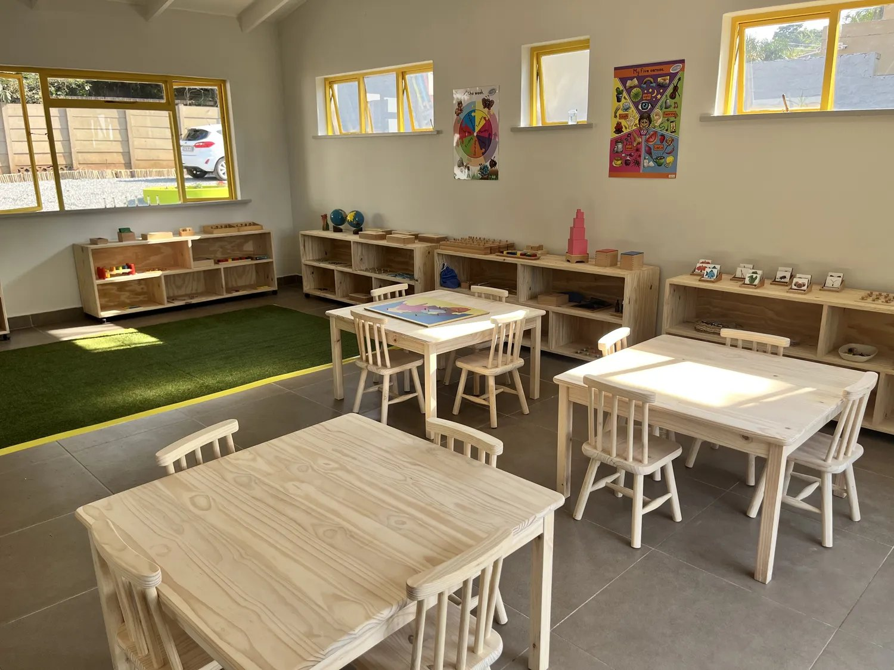
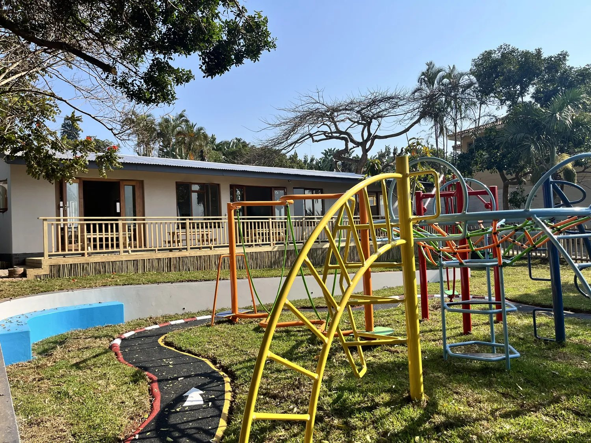

Welcome
Welcome to Little Tides Montessori, a warm and thoughtfully prepared preschool in the heart of Ballito. Everything we do is built around one simple idea: children learn best when they feel safe, respected and free to grow at their own pace.
Our approach
In a Montessori classroom, children are trusted to work at their own pace, with beautiful, purposeful materials and a teacher who observes, guides and encourages. Independence, concentration, kindness and a love of learning are practised every day, not as slogans but as habits built with care. We welcome Ballito families of every background, and we treat each child as a unique person with their own rhythm of growing.
Our home
You’ll find us at 61 Minerva Road North, Ballito, with bright classrooms, a garden for outdoor discovery and quiet corners for rest. We’d love to show you around.


Now enrolling for 2027
To arrange a visit, request an enrolment form or ask a question, please get in touch.
info@littletides.co.za · 072 456 1282 · littletides.co.za · 61 Minerva Road North, Ballito · All sessions start at 07:30. Half day until 12:15 (without lunch) or 13:30 (with lunch); full day until 17:30.
Little Tides (Pty) Ltd (reg. 2026/922192/07) t/a Little Tides Montessori